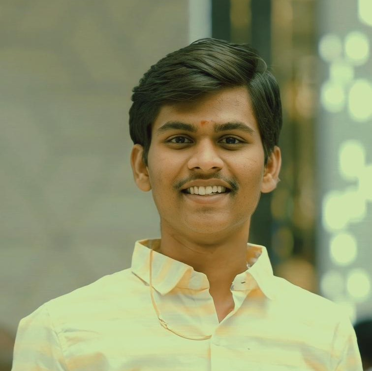

Sri Mourya Danthala
Education
-
B.Tech - B V Raju Institute of Technology
[2020-2024]
-
Intermediate- Telangana State Board of Intermediate Education
[2018-2020]
-
SSC - Telangana State Board of Secondary Education
[2018]
Publications
-
Analyzing Sentiment of Stock Market Data from twitter using Machine Learning and
Deep Learning Techniques
-
HLN-FGA
Technical Skills
-
Languages:
-
Databases
-
Other
Achivements
-
Finalist, Chegg Re-Invent 2022, National Level
Hackathon.
br
-
Secured 2nd position in Hack A Void, National
Level Hackathon conducted at BVRITN under
Promethean.
br
-
Winner, Ideathon of Commutek 2k22 - National Level Symposium conducted by Dept.of
CSE BVRITN.
Projects
Grameen Connect
- It is an application that acts as an interface between farmers
and a pool of agricultural experts to solve their queries.
- features included are: Chat, Post, Comment, Real time communication.
Stock trend prediction
- Used NLP toolkit to extract sentiments from tweets on stocks
and predict the trend of stocks.